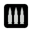
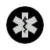

Главная
Новости
Информация

Штурмовик
Штурмовик — основной класс в игре и главная огневая сила отряда. Штурмовик занимает ведущую позицию в отряде, на него возлагается задача уничтожения противника, поэтому при игре за данный класс нужно много двигаться и стрелять. Штурмовик — универсальный класс, который пригодится в любой ситуации. Он особенно эффективен в бою на средней дистанции. Основным оружием этого класса являются штурмовые винтовки. Это идеальный вариант для боя на всех дистанциях. Также в арсенале штурмовика есть пулемёты. Боец с пулемётом менее мобилен, зато его оружие обладает существенно большей вместимостью магазина по сравнению со штурмовой винтовкой. Пулемёты отлично подходят для ведения огня на подавление, не давая противнику высунуться из укрытия. Штурмовики могут пополнять боезапас товарищей по команде с помощью ЛКМ и свой боезапас с помощью ПКМ. Эта способность просто незаменима во время длительных совместных заданий. Вовремя переданная коробка с патронами может помочь вашим товарищам одолеть противника. Количество пополняемых патронов ограничено.

Медик
Медик — классический вспомогательный класс. Он занимает ведущую позицию в отряде. Медик — мастер подкатов и схваток в узких коридорах, где уклониться от выстрела из дробовика почти невозможно, избегающий открытых пространств и больших перебежек, где он может стать лёгкой добычей снайпера или штурмовика. Медик — универсальный класс, который пригодится в любой ситуации. Он особенно эффективен в бою на ближней дистанции. Основным оружием этого класса являются дробовики, теряющие своё преимущество с увеличением расстояния. Дробовики делятся на три вида: помповые, полуавтоматические и автоматические. Это идеальный вариант для боя на ближней дистанции. Медики могут лечить товарищей по команде с помощью ЛКМ и себя с помощью ПКМ. Эта способность просто незаменима во время длительных совместных заданий. За один раз можно восстановить ограниченное количество очков здоровья. Также медики могут реанимировать товарищей по команде с помощью ЛКМ. Разряд дефибриллятора для живого противника смертелен!
Инженер
Инженер — специалист по диверсиям, поэтому ему нет равных в установке и обезвреживании бомб. Инженер занимает второстепенную позицию в отряде и является лучшим другом для СЭДа. В схватке он может как действовать в обороне, прячась и подстерегая противника, так и атаковать, передвигаясь короткими перебежками. Инженер — универсальный класс, который не помешал бы в любой ситуации. Он особенно эффективен в бою на ближней дистанции. Основным оружием этого класса являются пистолеты-пулемёты и укороченные автоматы. Это идеальный вариант для боя на ближней и средней дистанциях. Все пистолеты-пулемёты отличаются высокой скорострельностью, что делает их чрезвычайно смертоносными вблизи. Также в изначальном арсенале инженера есть мины направленного поражения. Мины — самое смертельное оружие инженера, которые позволяют защитить наиболее уязвимые области от атак противника. Они реагируют на движение рядом противника и наносят огромный урон. Без специального бронежилета попавший в радиус взрыва противник с большой вероятностью погибнет на месте. Но и самому инженеру следует быть осторожным — мину нетрудно взорвать выстрелом или гранатой, а детонирующая от движения врага взрывчатка может убить и своего владельца. Инженеры могут чинить повреждённую броню товарищей по команде с помощью ЛКМ и свою броню с помощью ПКМ.
Снайпер
Снайпер — единственный класс, который может успешно поражать врагов на дальней дистанции, нанося значительный урон отряду врага и подавляя атаку. Его задача — своевременное уничтожение особо опасных боевых единиц отряда противника — снайперов и пулемётчиков, а в затяжных боях — и тяжёлых пехотинцев. Снайпер — универсальный класс, который не помешал бы в любой ситуации. Он особенно эффективен в бою на дальней дистанции. Основным оружием этого класса являются снайперские винтовки. Они делятся на три вида: полуавтоматические, автоматические и винтовки с продольно-скользящим поворотным затвором. Это идеальный вариант для боя на дальней дистанции. Также в арсенале снайпера есть мины кругового поражения. Мины — смертельное оружие снайпера, которые позволяют защитить наиболее уязвимые области от атак противника. Они реагируют на движение рядом противника и наносят огромный урон. Без специального бронежилета попавший в радиус взрыва противник с большой вероятностью погибнет на месте. Но и самому снайперу следует быть осторожным — мину нетрудно взорвать выстрелом или гранатой, а детонирующая от движения врага взрывчатка может убить и своего владельца.